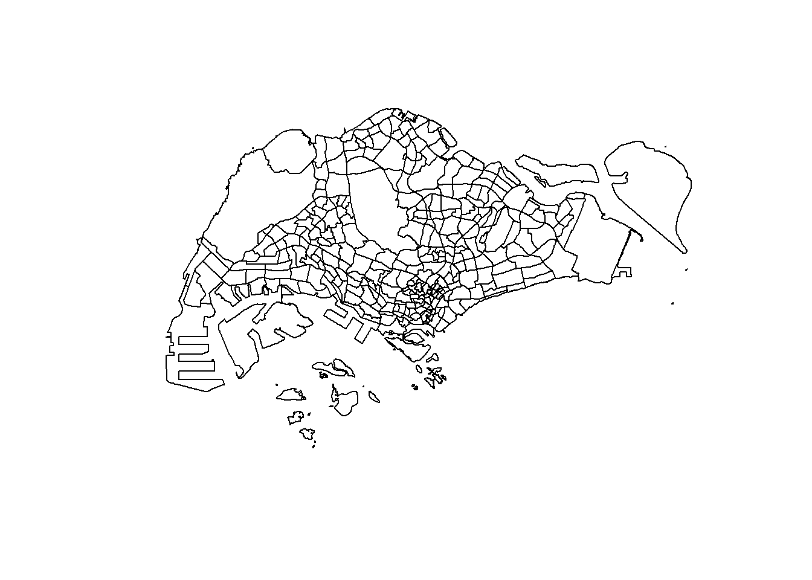
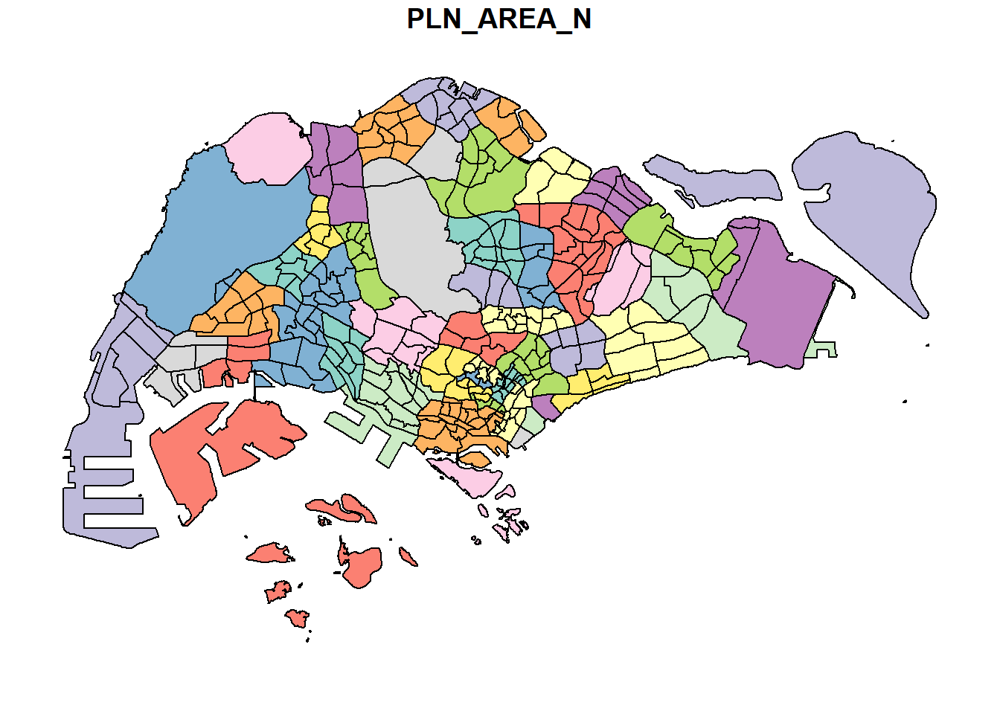
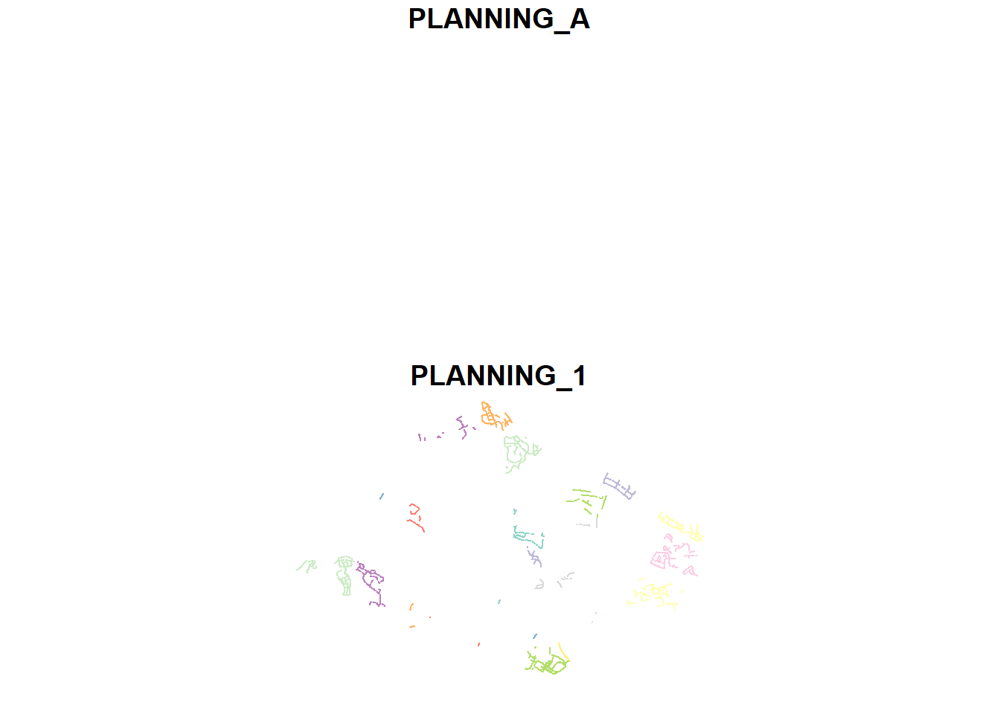
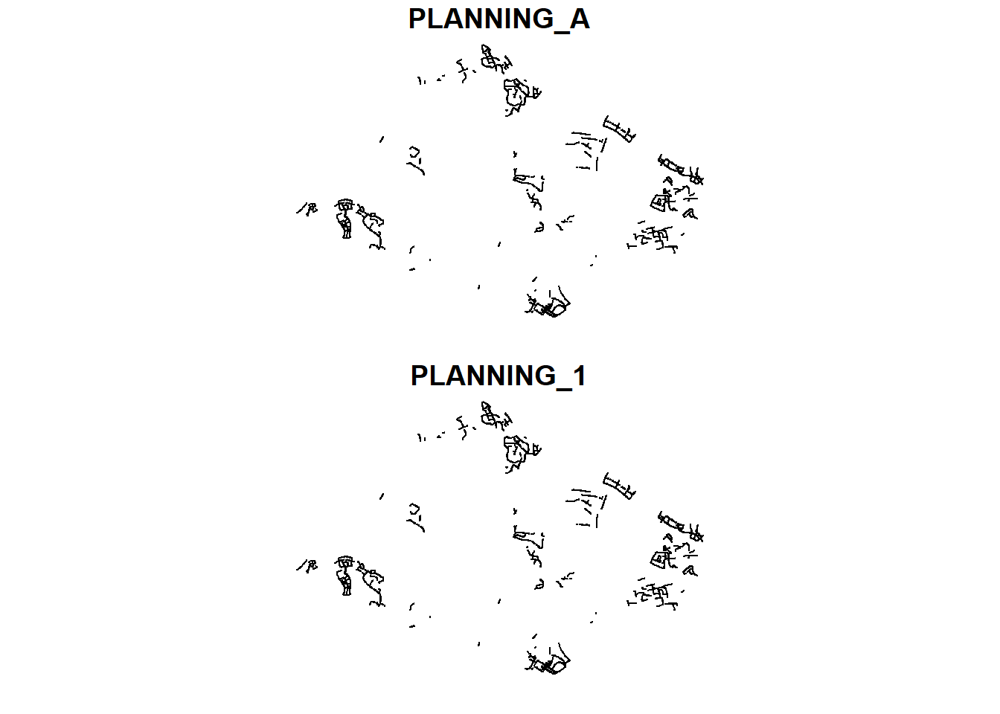
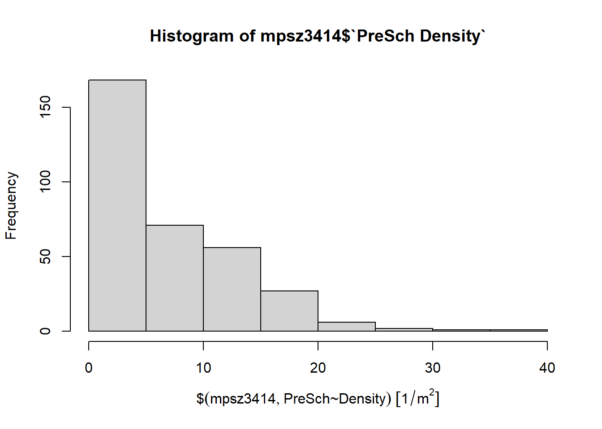
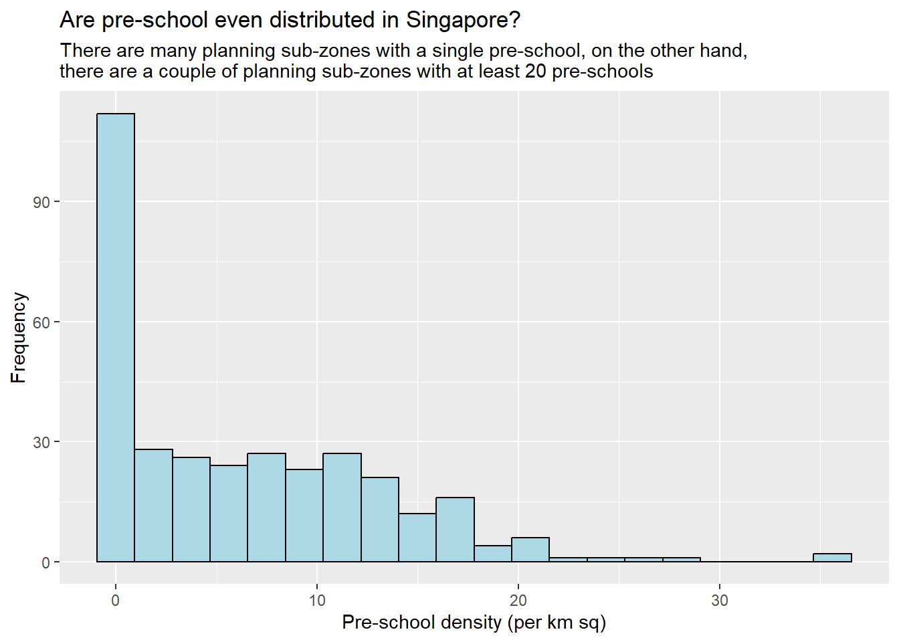
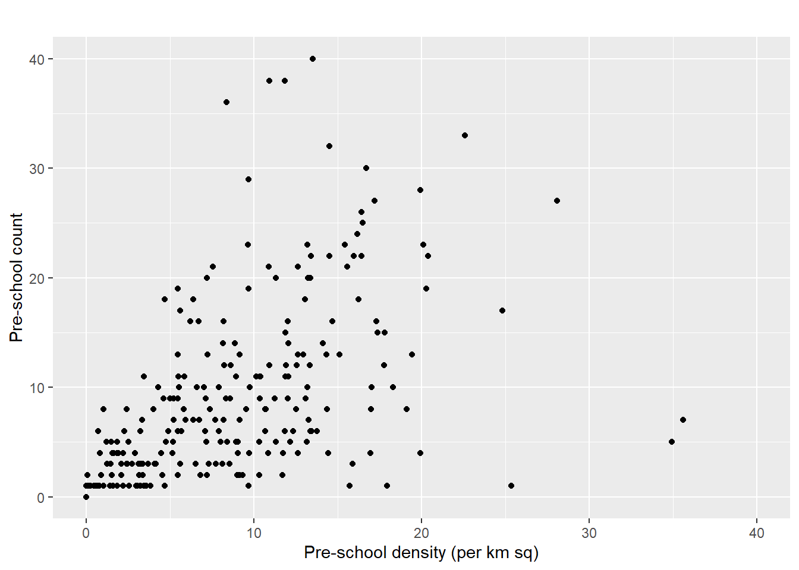

options(max.print=1000000)In-class Exercise 1: My First Date with Geospatial Data Analytics
Getting Started
The code chunk below load the following packages:
- tmap : for thematic mapping
- sf : for geospatial data handling
- tidyverse: for non-spatial data handling
pacman::p_load(tmap, sf, tidyverse)
# note : this is the R code for quatero, usually in R, we would have use library(tamp) etc
#pacman:: call the package. then p_load is a function within pacmanImporting Geospatial Data
Importing the Boundaries
The Masterplan 2014 Subzone Boundary is a shapefile that need to be imported. It will cut singapore into different subzones
i recall prof was saying we should project to Singapore 3414. but either code seem to work? i think it is depending on which code i put in first. if i swap these 2 code around. it doesn’t seem to work. MP2019 shapefile is still in WGS84 (degree) instead of SVY21 (meters)
mpsz = st_read(dsn = "data/geospatial",
layer = "MPSZ-2019")Reading layer `MPSZ-2019' from data source
`C:\worksheep\ISSS624\In-class_Ex\In-class_Ex1\data\geospatial'
using driver `ESRI Shapefile'
Simple feature collection with 332 features and 6 fields
Geometry type: MULTIPOLYGON
Dimension: XY
Bounding box: xmin: 103.6057 ymin: 1.158699 xmax: 104.0885 ymax: 1.470775
Geodetic CRS: WGS 84mpsz <- st_read(dsn = "data/geospatial", layer = "MPSZ-2019") %>% st_transform(crs = 3414)
#WGS84 SVY21
#CRS coordinate representation system for Singapore is 3414Importing the cycling path
this is different from the earlier where this is SVY21
cyclingpath = st_read(dsn = "data/geospatial",
layer = "CyclingPathGazette")Reading layer `CyclingPathGazette' from data source
`C:\worksheep\ISSS624\In-class_Ex\In-class_Ex1\data\geospatial'
using driver `ESRI Shapefile'
Simple feature collection with 2558 features and 2 fields
Geometry type: MULTILINESTRING
Dimension: XY
Bounding box: xmin: 11854.32 ymin: 28347.98 xmax: 42626.09 ymax: 48948.15
Projected CRS: SVY21I think i get it, the difference is base on the original file. So for WGS84 or SVY21, it is due to the shape file’s original coordinate system? I don’t recall so though.
Importing Preschool Location
preschool = st_read("data/geospatial/PreSchoolsLocation.kml")Reading layer `PRESCHOOLS_LOCATION' from data source
`C:\worksheep\ISSS624\In-class_Ex\In-class_Ex1\data\geospatial\PreSchoolsLocation.kml'
using driver `KML'
Simple feature collection with 2290 features and 2 fields
Geometry type: POINT
Dimension: XYZ
Bounding box: xmin: 103.6878 ymin: 1.247759 xmax: 103.9897 ymax: 1.462134
z_range: zmin: 0 zmax: 0
Geodetic CRS: WGS 84the main diff is this is KML file instead of shapefile. but seems like i can still use st_read, just that for this i don’t need to specify dsn and layer.
Importing Aspatial Data
Initial Import
We are getting all the airbnb listing in
listings <- read_csv("data/aspatial/listings.csv")
list(listings) [[1]]
# A tibble: 3,483 × 18
id name host_id host_name neighbourhood_group neighbourhood latitude
<dbl> <chr> <dbl> <chr> <chr> <chr> <dbl>
1 71609 Villa in… 367042 Belinda East Region Tampines 1.35
2 71896 Home in … 367042 Belinda East Region Tampines 1.35
3 71903 Home in … 367042 Belinda East Region Tampines 1.35
4 275343 Rental u… 1439258 Kay Central Region Bukit Merah 1.29
5 275344 Rental u… 1439258 Kay Central Region Bukit Merah 1.29
6 289234 Home in … 367042 Belinda East Region Tampines 1.34
7 294281 Rental u… 1521514 Elizabeth Central Region Newton 1.31
8 324945 Rental u… 1439258 Kay Central Region Bukit Merah 1.29
9 330095 Rental u… 1439258 Kay Central Region Bukit Merah 1.29
10 369141 Place to… 1521514 Elizabeth Central Region Newton 1.31
# ℹ 3,473 more rows
# ℹ 11 more variables: longitude <dbl>, room_type <chr>, price <dbl>,
# minimum_nights <dbl>, number_of_reviews <dbl>, last_review <date>,
# reviews_per_month <dbl>, calculated_host_listings_count <dbl>,
# availability_365 <dbl>, number_of_reviews_ltm <dbl>, license <chr>Converting Aspatial to Spatial
the lat long has been converted to a geometry
listings_sf <- st_as_sf(listings,
coords = c("longitude", "latitude"),
crs=4326) %>%
st_transform(crs = 3414)
glimpse(listings_sf)Rows: 3,483
Columns: 17
$ id <dbl> 71609, 71896, 71903, 275343, 275344, 28…
$ name <chr> "Villa in Singapore · ★4.44 · 2 bedroom…
$ host_id <dbl> 367042, 367042, 367042, 1439258, 143925…
$ host_name <chr> "Belinda", "Belinda", "Belinda", "Kay",…
$ neighbourhood_group <chr> "East Region", "East Region", "East Reg…
$ neighbourhood <chr> "Tampines", "Tampines", "Tampines", "Bu…
$ room_type <chr> "Private room", "Private room", "Privat…
$ price <dbl> 150, 80, 80, 55, 69, 220, 85, 75, 45, 7…
$ minimum_nights <dbl> 92, 92, 92, 60, 60, 92, 92, 60, 60, 92,…
$ number_of_reviews <dbl> 20, 24, 47, 22, 17, 12, 133, 18, 6, 81,…
$ last_review <date> 2020-01-17, 2019-10-13, 2020-01-09, 20…
$ reviews_per_month <dbl> 0.14, 0.16, 0.31, 0.17, 0.12, 0.09, 0.9…
$ calculated_host_listings_count <dbl> 5, 5, 5, 52, 52, 5, 7, 52, 52, 7, 7, 1,…
$ availability_365 <dbl> 89, 89, 89, 275, 274, 89, 365, 365, 365…
$ number_of_reviews_ltm <dbl> 0, 0, 0, 0, 3, 0, 0, 1, 3, 0, 0, 0, 0, …
$ license <chr> NA, NA, NA, "S0399", "S0399", NA, NA, "…
$ geometry <POINT [m]> POINT (41972.5 36390.05), POINT (…Doing Some Initial Play with the Data
DataTable
st_geometry(mpsz)Geometry set for 332 features
Geometry type: MULTIPOLYGON
Dimension: XY
Bounding box: xmin: 103.6057 ymin: 1.158699 xmax: 104.0885 ymax: 1.470775
Geodetic CRS: WGS 84
First 5 geometries:glimpse(mpsz)Rows: 332
Columns: 7
$ SUBZONE_N <chr> "MARINA EAST", "INSTITUTION HILL", "ROBERTSON QUAY", "JURON…
$ SUBZONE_C <chr> "MESZ01", "RVSZ05", "SRSZ01", "WISZ01", "MUSZ02", "MPSZ05",…
$ PLN_AREA_N <chr> "MARINA EAST", "RIVER VALLEY", "SINGAPORE RIVER", "WESTERN …
$ PLN_AREA_C <chr> "ME", "RV", "SR", "WI", "MU", "MP", "WI", "WI", "SI", "SI",…
$ REGION_N <chr> "CENTRAL REGION", "CENTRAL REGION", "CENTRAL REGION", "WEST…
$ REGION_C <chr> "CR", "CR", "CR", "WR", "CR", "CR", "WR", "WR", "CR", "CR",…
$ geometry <MULTIPOLYGON [°]> MULTIPOLYGON (((103.8802 1...., MULTIPOLYGON (…head(mpsz, n=5)Simple feature collection with 5 features and 6 fields
Geometry type: MULTIPOLYGON
Dimension: XY
Bounding box: xmin: 103.6537 ymin: 1.216215 xmax: 103.8811 ymax: 1.29742
Geodetic CRS: WGS 84
SUBZONE_N SUBZONE_C PLN_AREA_N PLN_AREA_C REGION_N
1 MARINA EAST MESZ01 MARINA EAST ME CENTRAL REGION
2 INSTITUTION HILL RVSZ05 RIVER VALLEY RV CENTRAL REGION
3 ROBERTSON QUAY SRSZ01 SINGAPORE RIVER SR CENTRAL REGION
4 JURONG ISLAND AND BUKOM WISZ01 WESTERN ISLANDS WI WEST REGION
5 FORT CANNING MUSZ02 MUSEUM MU CENTRAL REGION
REGION_C geometry
1 CR MULTIPOLYGON (((103.8802 1....
2 CR MULTIPOLYGON (((103.8376 1....
3 CR MULTIPOLYGON (((103.8341 1....
4 WR MULTIPOLYGON (((103.7125 1....
5 CR MULTIPOLYGON (((103.8472 1....Plotting a Map
plot(mpsz)
plot(st_geometry(mpsz))
plot(mpsz["PLN_AREA_N"])
Changing the Projection
First we need to check the data
st_crs(mpsz)Coordinate Reference System:
User input: WGS 84
wkt:
GEOGCRS["WGS 84",
DATUM["World Geodetic System 1984",
ELLIPSOID["WGS 84",6378137,298.257223563,
LENGTHUNIT["metre",1]]],
PRIMEM["Greenwich",0,
ANGLEUNIT["degree",0.0174532925199433]],
CS[ellipsoidal,2],
AXIS["latitude",north,
ORDER[1],
ANGLEUNIT["degree",0.0174532925199433]],
AXIS["longitude",east,
ORDER[2],
ANGLEUNIT["degree",0.0174532925199433]],
ID["EPSG",4326]]actually after checking i saw that prof used another command to change the projection . What is the difference between st_set_crs and st_transform. from what is googled, st_set_crs just update the metadata but doesn’t change the coordinates itself
mpsz3414 <- st_set_crs(mpsz, 3414)st_crs(mpsz3414)Coordinate Reference System:
User input: EPSG:3414
wkt:
PROJCRS["SVY21 / Singapore TM",
BASEGEOGCRS["SVY21",
DATUM["SVY21",
ELLIPSOID["WGS 84",6378137,298.257223563,
LENGTHUNIT["metre",1]]],
PRIMEM["Greenwich",0,
ANGLEUNIT["degree",0.0174532925199433]],
ID["EPSG",4757]],
CONVERSION["Singapore Transverse Mercator",
METHOD["Transverse Mercator",
ID["EPSG",9807]],
PARAMETER["Latitude of natural origin",1.36666666666667,
ANGLEUNIT["degree",0.0174532925199433],
ID["EPSG",8801]],
PARAMETER["Longitude of natural origin",103.833333333333,
ANGLEUNIT["degree",0.0174532925199433],
ID["EPSG",8802]],
PARAMETER["Scale factor at natural origin",1,
SCALEUNIT["unity",1],
ID["EPSG",8805]],
PARAMETER["False easting",28001.642,
LENGTHUNIT["metre",1],
ID["EPSG",8806]],
PARAMETER["False northing",38744.572,
LENGTHUNIT["metre",1],
ID["EPSG",8807]]],
CS[Cartesian,2],
AXIS["northing (N)",north,
ORDER[1],
LENGTHUNIT["metre",1]],
AXIS["easting (E)",east,
ORDER[2],
LENGTHUNIT["metre",1]],
USAGE[
SCOPE["Cadastre, engineering survey, topographic mapping."],
AREA["Singapore - onshore and offshore."],
BBOX[1.13,103.59,1.47,104.07]],
ID["EPSG",3414]]mpsz3414 <- st_transform(mpsz, 3414)st_crs(mpsz3414)Coordinate Reference System:
User input: EPSG:3414
wkt:
PROJCRS["SVY21 / Singapore TM",
BASEGEOGCRS["SVY21",
DATUM["SVY21",
ELLIPSOID["WGS 84",6378137,298.257223563,
LENGTHUNIT["metre",1]]],
PRIMEM["Greenwich",0,
ANGLEUNIT["degree",0.0174532925199433]],
ID["EPSG",4757]],
CONVERSION["Singapore Transverse Mercator",
METHOD["Transverse Mercator",
ID["EPSG",9807]],
PARAMETER["Latitude of natural origin",1.36666666666667,
ANGLEUNIT["degree",0.0174532925199433],
ID["EPSG",8801]],
PARAMETER["Longitude of natural origin",103.833333333333,
ANGLEUNIT["degree",0.0174532925199433],
ID["EPSG",8802]],
PARAMETER["Scale factor at natural origin",1,
SCALEUNIT["unity",1],
ID["EPSG",8805]],
PARAMETER["False easting",28001.642,
LENGTHUNIT["metre",1],
ID["EPSG",8806]],
PARAMETER["False northing",38744.572,
LENGTHUNIT["metre",1],
ID["EPSG",8807]]],
CS[Cartesian,2],
AXIS["northing (N)",north,
ORDER[1],
LENGTHUNIT["metre",1]],
AXIS["easting (E)",east,
ORDER[2],
LENGTHUNIT["metre",1]],
USAGE[
SCOPE["Cadastre, engineering survey, topographic mapping."],
AREA["Singapore - onshore and offshore."],
BBOX[1.13,103.59,1.47,104.07]],
ID["EPSG",3414]]preschool3414 <- st_transform(preschool,
crs = 3414)
st_crs(preschool3414)Coordinate Reference System:
User input: EPSG:3414
wkt:
PROJCRS["SVY21 / Singapore TM",
BASEGEOGCRS["SVY21",
DATUM["SVY21",
ELLIPSOID["WGS 84",6378137,298.257223563,
LENGTHUNIT["metre",1]]],
PRIMEM["Greenwich",0,
ANGLEUNIT["degree",0.0174532925199433]],
ID["EPSG",4757]],
CONVERSION["Singapore Transverse Mercator",
METHOD["Transverse Mercator",
ID["EPSG",9807]],
PARAMETER["Latitude of natural origin",1.36666666666667,
ANGLEUNIT["degree",0.0174532925199433],
ID["EPSG",8801]],
PARAMETER["Longitude of natural origin",103.833333333333,
ANGLEUNIT["degree",0.0174532925199433],
ID["EPSG",8802]],
PARAMETER["Scale factor at natural origin",1,
SCALEUNIT["unity",1],
ID["EPSG",8805]],
PARAMETER["False easting",28001.642,
LENGTHUNIT["metre",1],
ID["EPSG",8806]],
PARAMETER["False northing",38744.572,
LENGTHUNIT["metre",1],
ID["EPSG",8807]]],
CS[Cartesian,2],
AXIS["northing (N)",north,
ORDER[1],
LENGTHUNIT["metre",1]],
AXIS["easting (E)",east,
ORDER[2],
LENGTHUNIT["metre",1]],
USAGE[
SCOPE["Cadastre, engineering survey, topographic mapping."],
AREA["Singapore - onshore and offshore."],
BBOX[1.13,103.59,1.47,104.07]],
ID["EPSG",3414]]The Scenarios:
Scenario 1
The authority is planning to upgrade the exiting cycling path. To do so, they need to acquire 5 metres of reserved land on the both sides of the current cycling path. You are tasked to determine the extend of the land need to be acquired and their total area.
Scenario 1 Solution:
Question: what is the difference between PLANNING_A and PLANNING_1. but given that PLANNING_A is all NA, why is showing in the plot for buffer but not for the cycling path itself?
buffer_cycling <- st_buffer(cyclingpath,
dist=5, nQuadSegs = 30)
glimpse(buffer_cycling)Rows: 2,558
Columns: 3
$ PLANNING_A <chr> NA, NA, NA, NA, NA, NA, NA, NA, NA, NA, NA, NA, NA, NA, NA,…
$ PLANNING_1 <chr> "BEDOK", "BEDOK", "BEDOK", "TAMPINES", "TAMPINES", "TAMPINE…
$ geometry <POLYGON [m]> POLYGON ((39803.36 34814.24..., POLYGON ((39829.27 …plot(cyclingpath)
plot(buffer_cycling)
calculating the buffer area i.e. convert geometry into area then summing it up
buffer_cycling$AREA <- st_area(buffer_cycling)
sum(buffer_cycling$AREA)1774367 [m^2]Scenario 2
A pre-school service group want to find out the numbers of pre-schools in each Planning Subzone.
Scenario 2 Solution:
Calculate number of Preschool in PZ
The code chunk below performs two operations at one go. Firstly, identify pre-schools located inside each Planning Subzone by using st_intersects(). Next, length() of Base R is used to calculate numbers of pre-schools that fall inside each planning subzone.
mpsz3414$`PreSch Count`<- lengths(st_intersects(mpsz3414, preschool3414))
summary(mpsz3414$`PreSch Count`) Min. 1st Qu. Median Mean 3rd Qu. Max.
0.000 0.000 4.000 6.898 10.000 72.000 top_n(mpsz3414, 1, `PreSch Count`)Simple feature collection with 1 feature and 7 fields
Geometry type: MULTIPOLYGON
Dimension: XY
Bounding box: xmin: 39655.33 ymin: 35967.33 xmax: 42940.57 ymax: 38622.37
Projected CRS: SVY21 / Singapore TM
SUBZONE_N SUBZONE_C PLN_AREA_N PLN_AREA_C REGION_N REGION_C
1 TAMPINES EAST TMSZ02 TAMPINES TM EAST REGION ER
geometry PreSch Count
1 MULTIPOLYGON (((42196.76 38... 72Calulating the density of pre-school by planning subzone
mpsz3414$Area <- mpsz3414 %>%
st_area()
mpsz3414 <- mpsz3414 %>%
mutate(`PreSch Density` = `PreSch Count`/Area * 1000000)
top_n(mpsz3414, 10, `PreSch Density`)Simple feature collection with 10 features and 9 fields
Geometry type: MULTIPOLYGON
Dimension: XY
Bounding box: xmin: 17518.63 ymin: 28623.75 xmax: 36532.07 ymax: 48182.13
Projected CRS: SVY21 / Singapore TM
SUBZONE_N SUBZONE_C PLN_AREA_N PLN_AREA_C REGION_N
1 CECIL DTSZ08 DOWNTOWN CORE DT CENTRAL REGION
2 PHILLIP DTSZ04 DOWNTOWN CORE DT CENTRAL REGION
3 KATONG MPSZ02 MARINE PARADE MP CENTRAL REGION
4 SERANGOON NORTH SGSZ03 SERANGOON SG NORTH-EAST REGION
5 MANDAI ESTATE MDSZ03 MANDAI MD NORTH REGION
6 KEAT HONG CKSZ02 CHOA CHU KANG CK WEST REGION
7 SENGKANG TOWN CENTRE SESZ03 SENGKANG SE NORTH-EAST REGION
8 MIDVIEW WDSZ02 WOODLANDS WD NORTH REGION
9 WOODLANDS EAST WDSZ03 WOODLANDS WD NORTH REGION
10 SEMBAWANG CENTRAL SBSZ03 SEMBAWANG SB NORTH REGION
REGION_C geometry PreSch Count Area
1 CR MULTIPOLYGON (((29917.52 29... 7 196619.86 [m^2]
2 CR MULTIPOLYGON (((29814.11 29... 1 39437.94 [m^2]
3 CR MULTIPOLYGON (((36317.74 32... 22 1078992.03 [m^2]
4 NER MULTIPOLYGON (((32860.5 397... 17 684704.30 [m^2]
5 NR MULTIPOLYGON (((27119.56 45... 5 143137.94 [m^2]
6 WR MULTIPOLYGON (((18700.53 39... 23 1143813.67 [m^2]
7 NER MULTIPOLYGON (((35615.75 40... 33 1460534.44 [m^2]
8 NR MULTIPOLYGON (((23820.19 46... 19 936415.53 [m^2]
9 NR MULTIPOLYGON (((24786.75 46... 54 2553463.72 [m^2]
10 NR MULTIPOLYGON (((26311.14 46... 27 961421.72 [m^2]
PreSch Density
1 35.60169 [1/m^2]
2 25.35630 [1/m^2]
3 20.38940 [1/m^2]
4 24.82824 [1/m^2]
5 34.93134 [1/m^2]
6 20.10817 [1/m^2]
7 22.59447 [1/m^2]
8 20.29014 [1/m^2]
9 21.14775 [1/m^2]
10 28.08341 [1/m^2]Exploring the Data
hist(mpsz3414$`PreSch Density`)
ggplot(data=mpsz3414,
aes(x= as.numeric(`PreSch Density`)))+
geom_histogram(bins=20,
color="black",
fill="light blue") +
labs(title = "Are pre-school even distributed in Singapore?",
subtitle= "There are many planning sub-zones with a single pre-school, on the other hand, \nthere are a couple of planning sub-zones with at least 20 pre-schools",
x = "Pre-school density (per km sq)",
y = "Frequency")
ggplot(data=mpsz3414,
aes(y = `PreSch Count`,
x= as.numeric(`PreSch Density`)))+
geom_point(color="black",
fill="light blue") +
xlim(0, 40) +
ylim(0, 40) +
labs(title = "",
x = "Pre-school density (per km sq)",
y = "Pre-school count")
BELOW ARE NOT FOR THIS EX
Preparing the Flow Data
Importing the OD data
First, we will import the Passenger Volume by Origin Destination Bus Stops dataset downloaded from LTA DataMall by using read_csv() of readr package
odbus <- read.csv("data/aspatial/origin_destination_bus_202308.csv")odbus$ORIGIN_PT_CODE <- as.factor(odbus$ORIGIN_PT_CODE)
odbus$DESTINATION_PT_CODE <- as.factor(odbus$DESTINATION_PT_CODE)Extracting the study data
For the purpose of this exercise, we will extract commuting flows on weekday and between 7 and 9 o’clock
origtrip_7_9 <- odbus %>%
filter(DAY_TYPE == "WEEKDAY") %>%
filter(TIME_PER_HOUR >= 7 & TIME_PER_HOUR <= 9) %>%
group_by(ORIGIN_PT_CODE) %>%
summarise(TRIPS= sum(TOTAL_TRIPS))
#for beginners, we may not want to use pipe %>%, we can chop up the code into individual blocks, to understand the output step by stepbusstop <- st_read(dsn = "data/geospatial", layer="BusStop") %>% st_transform(crs = 3414)
# dsn is data geospatial
mpsz <- st_read(dsn = "data/geospatial", layer = "MPSZ-2019") %>% st_transform(crs = 3414)
#WGS84 SVY21
#CRS coordinate representation system for Singapore is 3414